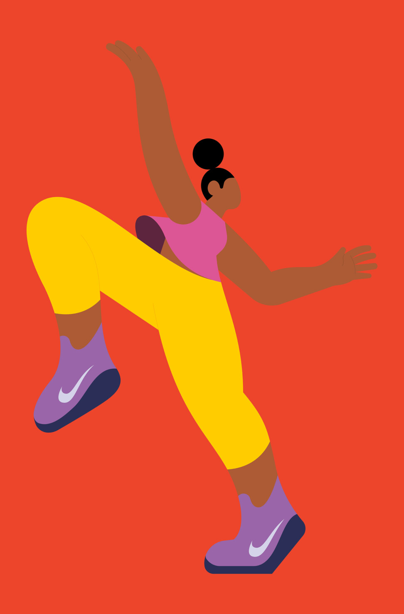
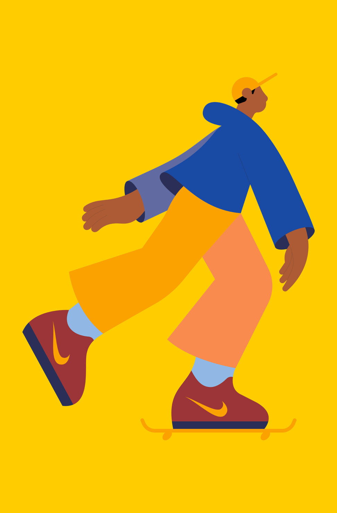
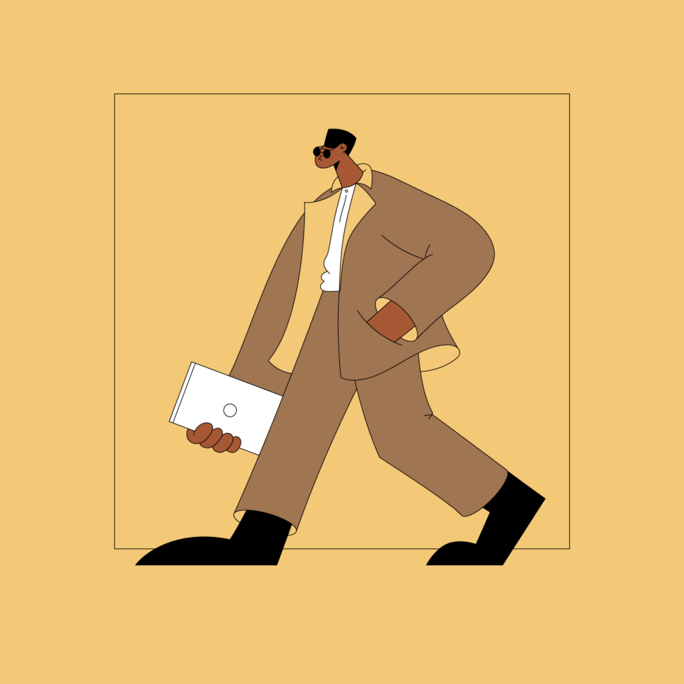
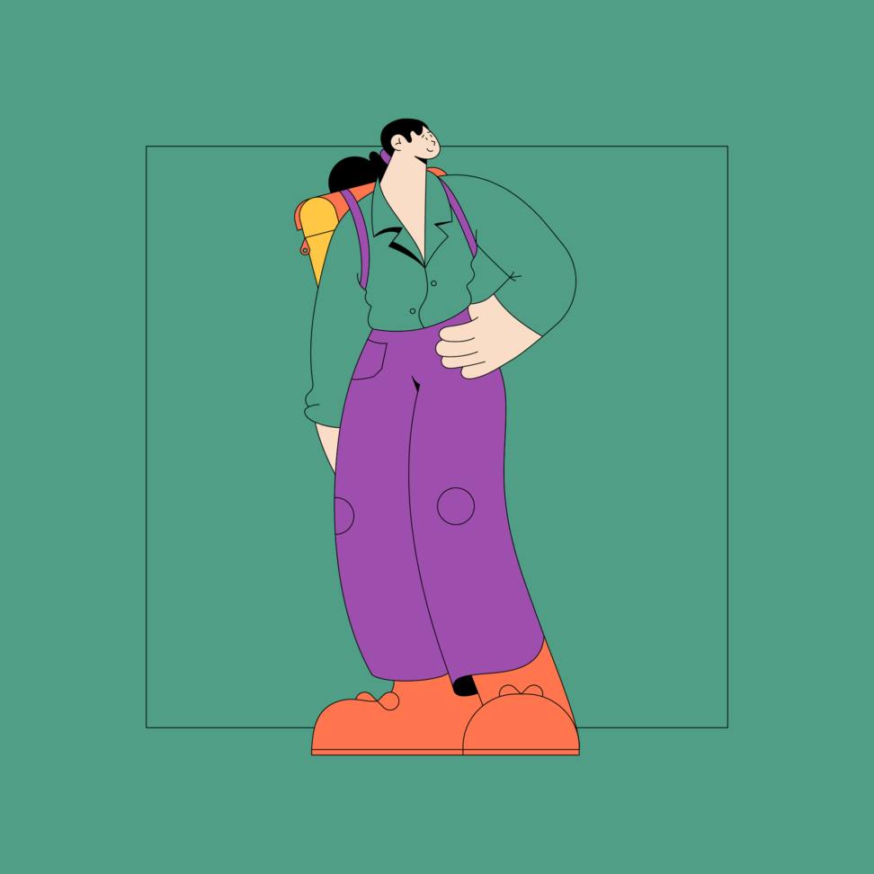
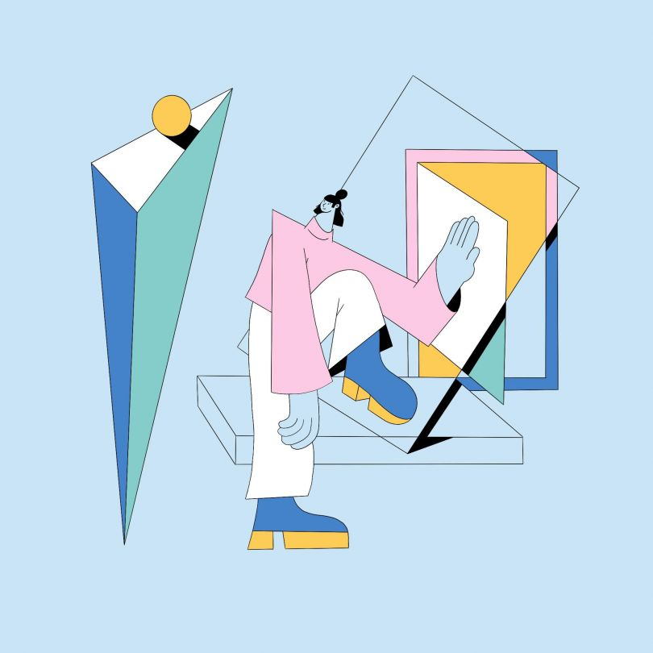

Swedish illustrator, designer and animator Linn Fritz lives and works in London where she creates charmingly clean, precise imagery in a trademark pastel palette for a wide range of editorial and commercial clients. Some of her favorite projects often orbit around her interests of feminism, clothes, plants and interior.